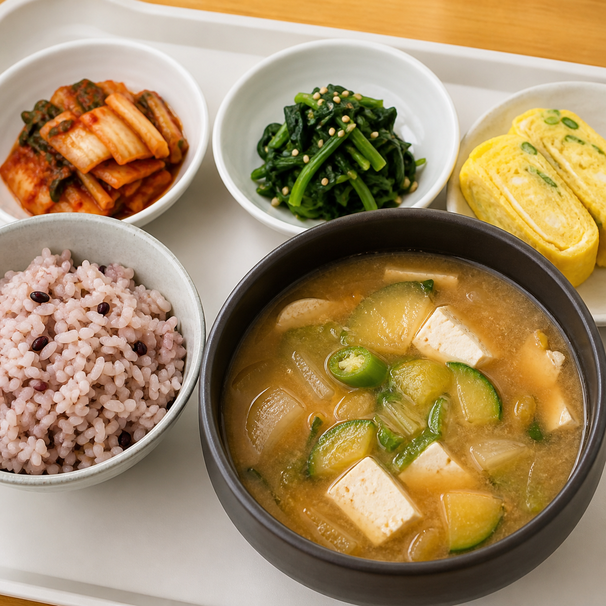

상태 미리보기 (검토용)
▾
조식전
조식중
조식완료+중식전
중식중
중식완료+석식전
석식중
석식후
현대캐피탈
급식
본사 식당
⌄
‹
오늘의 식단
8월 19일
수요일
오늘로
›
새 급식정보 서비스 오픈 안내
›
NEXT MEAL
석식을 준비하고 있어요
17:30부터
07:30
09:00
조식
된장국 정식
잡곡밥 · 계란말이 · 시금치나물
★ 4.0
잡곡밥 · 계란말이
시금치나물 · 배추김치
식단 상세 보기
→

07:30부터
11:30
13:30
중식
제육볶음 정식
잡곡밥 · 계란찜 · 시금치나물 · 배추김치
식단 상세 보기
→
제공 중
17:30
19:00
석식
순두부찌개 정식
흰쌀밥 · 계란후라이 · 어묵볶음
17:30부터
흰쌀밥 · 계란후라이
어묵볶음 · 배추김치
식단 상세 보기
→
17:30부터
!
알레르기 안내
식단별 정보 확인
›
◌
급식 의견 남기기
더 나은 식단을 위해
›
홈
식단
의견
공지
MY